Hitori Gotoh
Gibson Les Paul Custom
The socially anxious lead guitar in many Kessoku Band songs like “Guitar, Loneliness, and Blue Planet” and “seisyun complex”.
02 / TOOLS OF MUSIC
HITORI GOTOH / GEAR
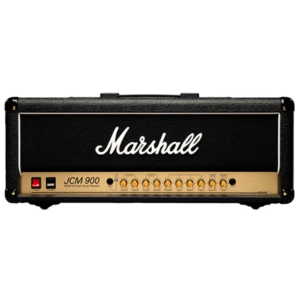
Marshall JCM900
This high-gain British tube amp stack is a staple of classic rock and punk tones, giving her Gibson Les Paul Custom its thick, punchy overdrive.
Buy Now ↗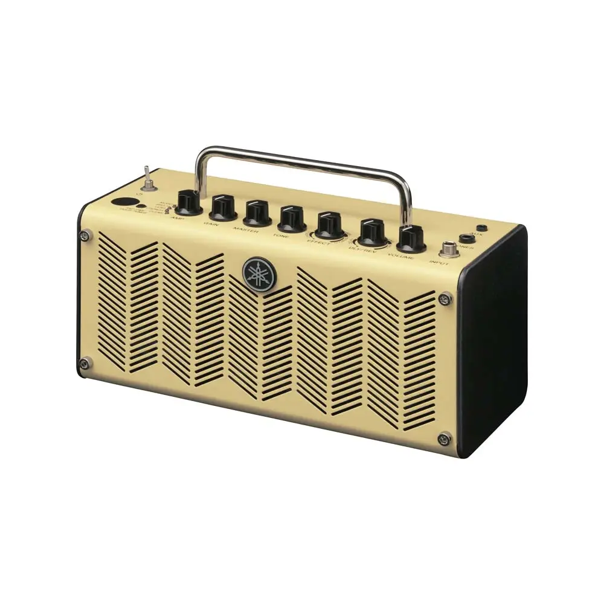
Yamaha THR5
This is a compact, portable 5-watt desktop modeling amplifier known for delivering tube-like tones at low volumes.
Buy Now ↗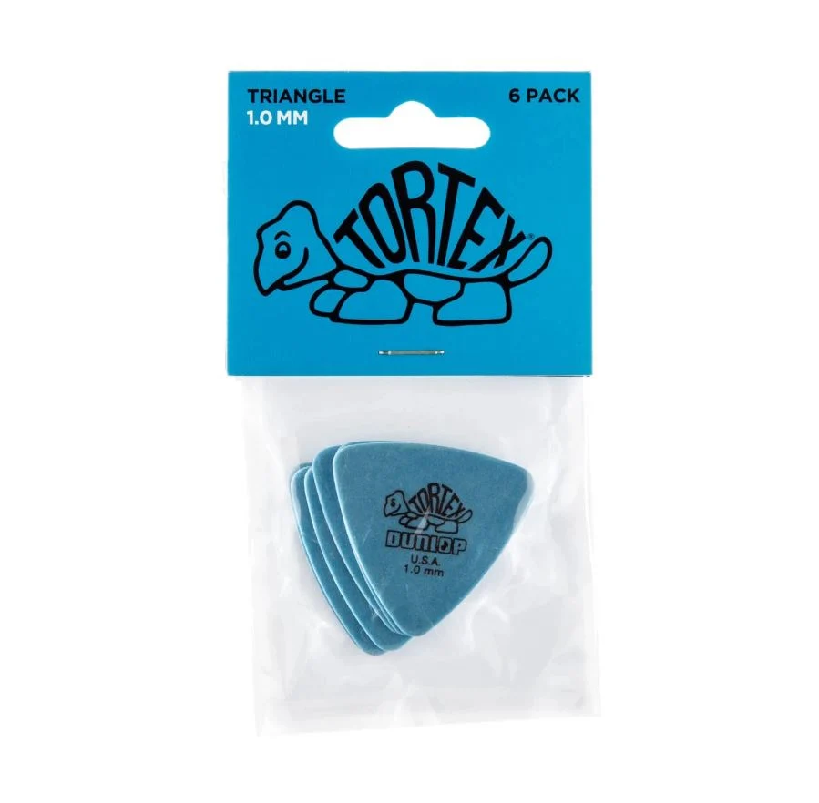
Dunlop Tortex Triangle
The large, oversized triangle shape provides a massive surface area to grip.
Buy Now ↗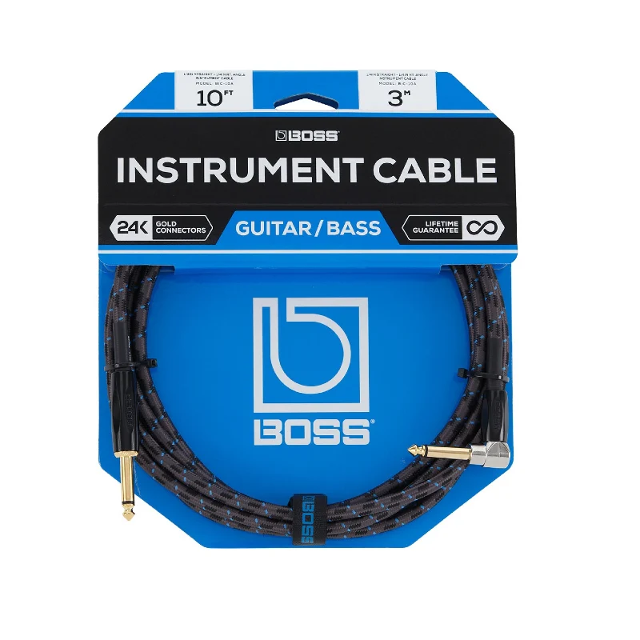
Boss BIC
She uses traditional, heavy-duty black Boss BIC to run from her guitar to her board, and from her board to her Marshall or Yamaha amp.
Buy Now ↗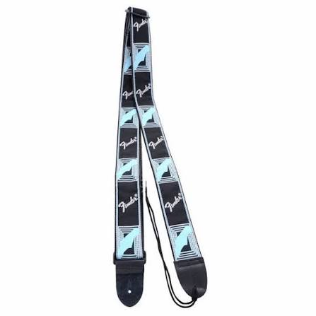
Fender Monogram Strap
The Fender strap features a wide, durable woven construction with a monogrammed pattern.
Buy Now ↗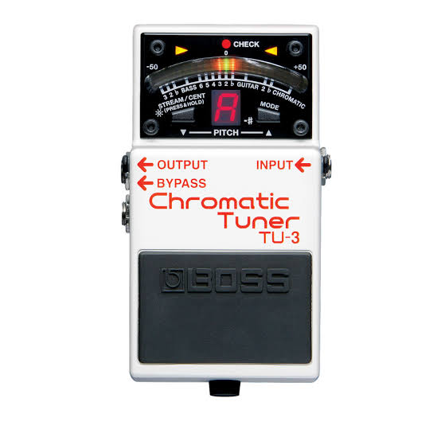
Boss TU-3 Chromatic Tuner
This is her go-to tool during her bedroom practice sessions and right before band kicks off a studio rehearsal.
Buy Now ↗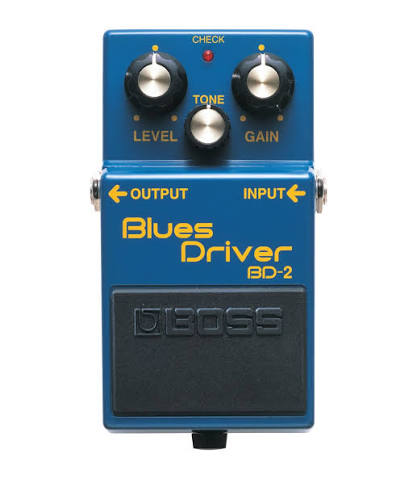
BOSS BD-2 Blues Driver
This is Bocchi's main overdrive pedal. It provides a crisp, touch-sensitive crunch. Activated on her solo to the song “That Band”.
Buy Now ↗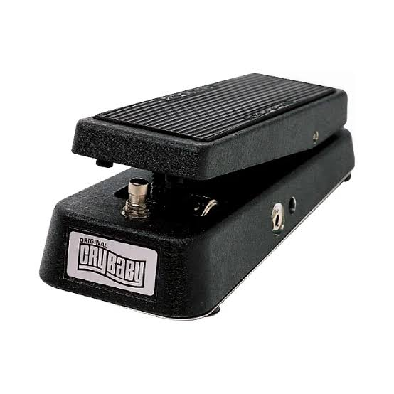
Dunlop Cry Baby GCB95 Wah
Bocchi uses a standard Dunlop Cry Baby wah pedal. This is most prominent during her climactic bottleneck slide guitar solo in “Never Forget”.
Buy Now ↗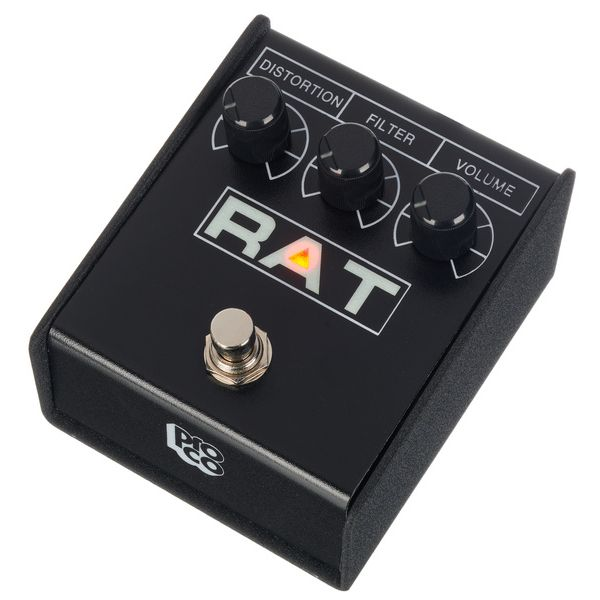
ProCo RAT 2 Distortion
When Kessoku Band's music requires heavier, aggressive, and more saturated tones, Bocchi engages her ProCo RAT 2.
Buy Now ↗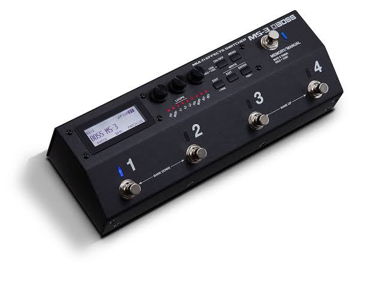
BOSS MS-3 Multi-Effects Switcher
The brain of her pedalboard is a BOSS MS-3. This unit acts as both a loop switcher, allowing her to instantly switch pedal combinations with one stomp.
Buy Now ↗IKUYO KITA / GEAR
Marshall JCM900
A high-gain British tube amp stack that gives Kita's Gibson Les Paul Jr. a bright, punchy rock crunch on stage.
Buy Now ↗Yamaha THR5
A compact 5-watt desktop modeling amp with tube-like tones at low volumes, borrowed from Hitori.
Buy Now ↗RYO YAMADA / GEAR
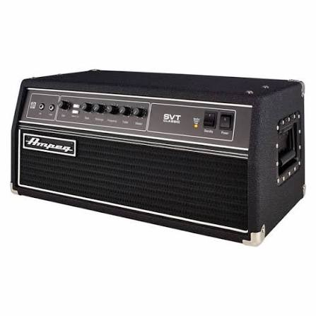
Ampeg SVT-CL
The classic all-tube bass head, the sound behind Ryo's thick low end on stage.
Buy Now ↗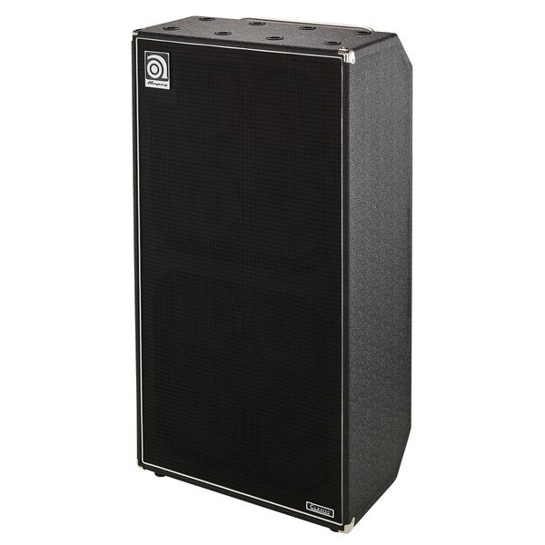
Ampeg SVT-810E
This is a compact, portable 5-watt desktop modeling amplifier known for delivering tube-like tones at low volumes.
Buy Now ↗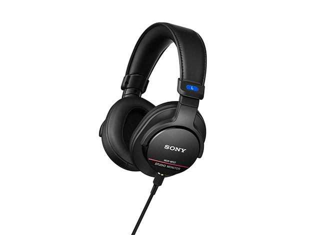
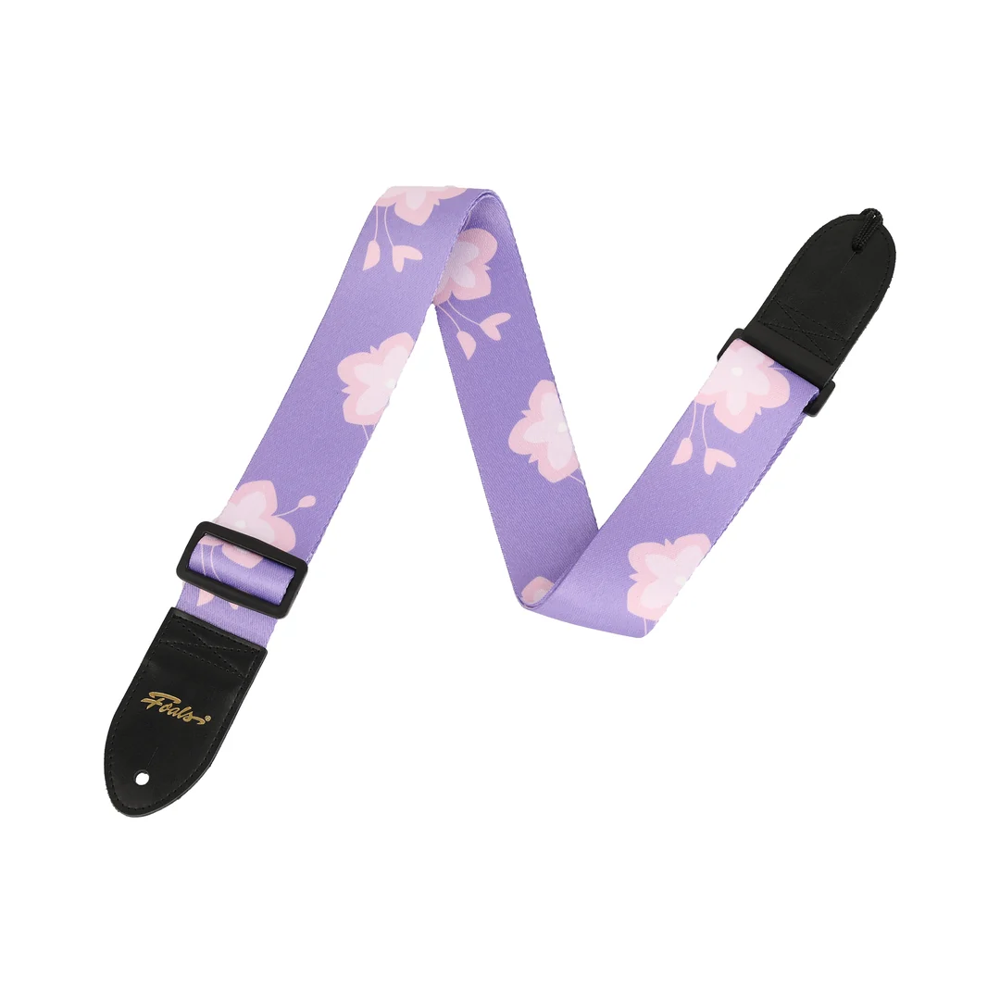
Boss TU-3 Chromatic Tuner
This is her go-to tool during her bedroom practice sessions and right before band kicks off a studio rehearsal.
Buy Now ↗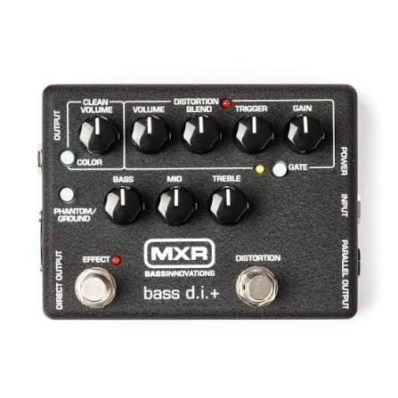
MXR M80 Bass D.I.
The core preamp and direct injection (D.I.) pedal featured in the official guidebook and anime art book.
Buy Now ↗NIJIKA IJICHI / GEAR
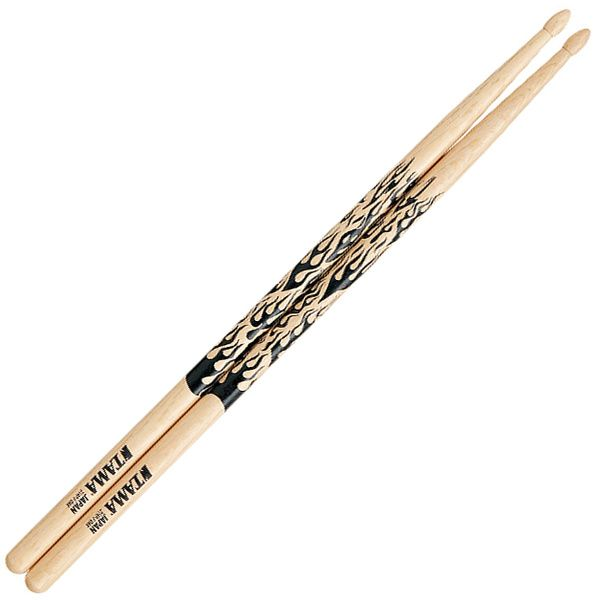
Tama 7A-F
They are thinner and lighter than standard sticks, offering quick, nimble responses and making them incredible for precise cymbal work and controlled playing.
Buy Now ↗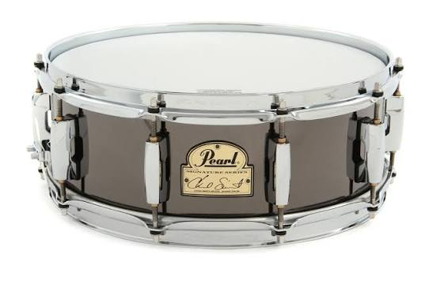
Pearl Chad Smith Signature
The bright, sharp, and high-volume "crack" needed to cut through complex arrangements.
Buy Now ↗